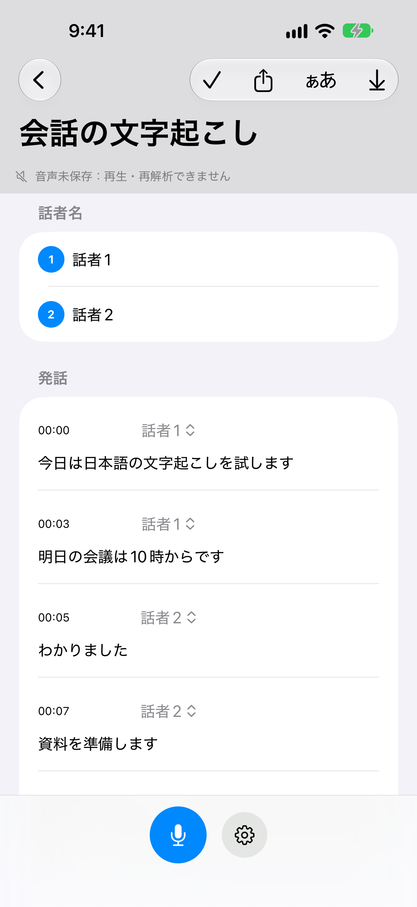
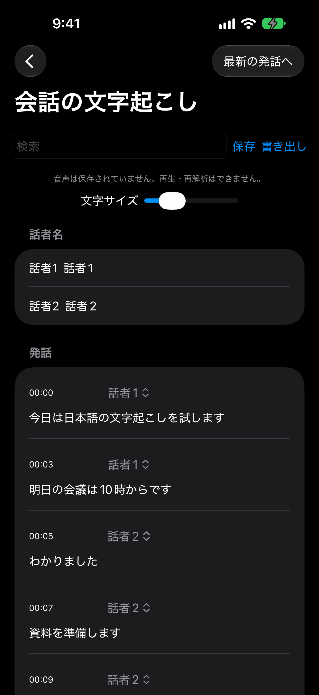
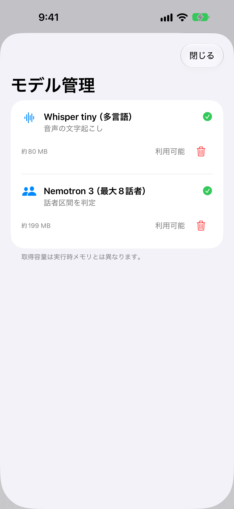
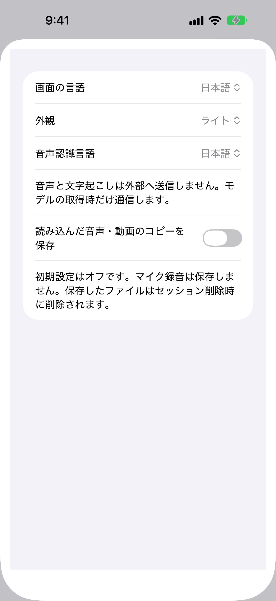
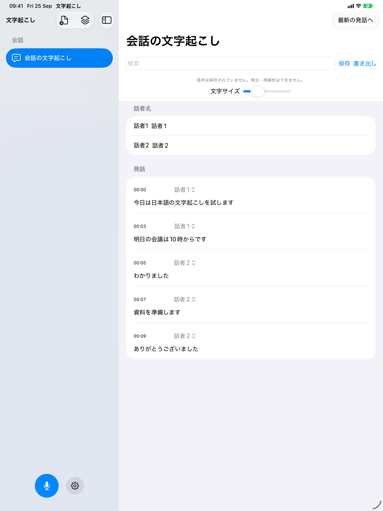
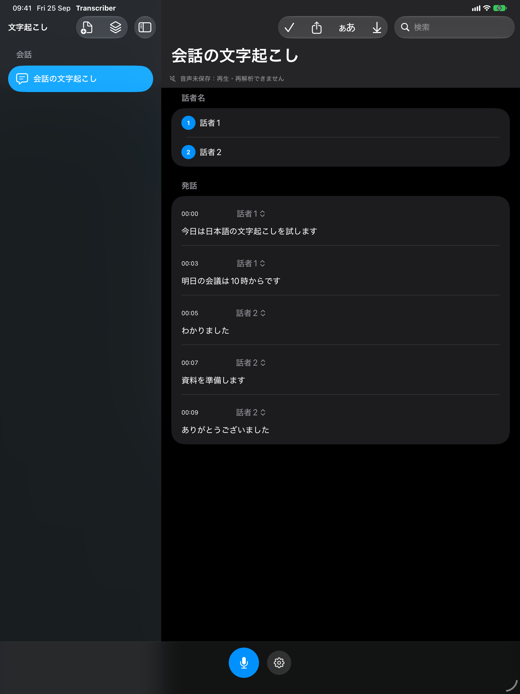

会話画面は合成日本語音声をWhisperKitとFluidAudioで解析した結果をもとに、隣接する区間をまとめて誤認識2か所を編集した例です。実機での速度や精度を示す画像ではありません。
iPhone




iPad


iPhone・iPadのSimulatorで撮影
会話画面は合成日本語音声をWhisperKitとFluidAudioで解析した結果をもとに、隣接する区間をまとめて誤認識2か所を編集した例です。実機での速度や精度を示す画像ではありません。





